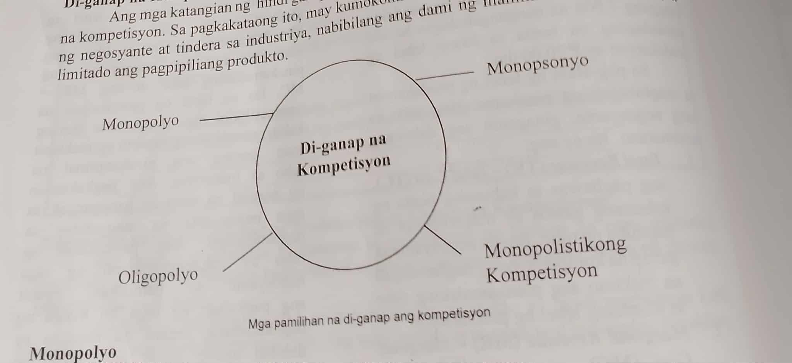
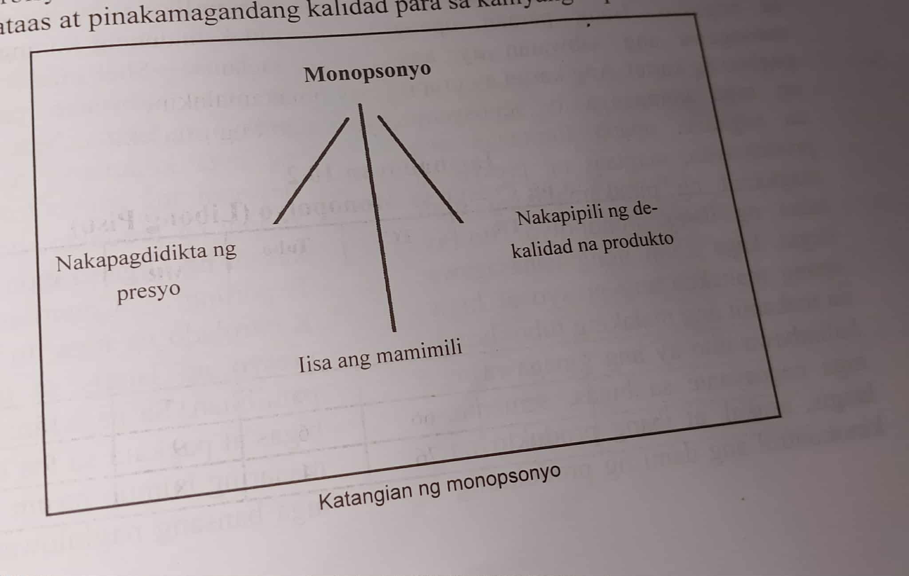

Ang pamilihan na ay sinasabing may ganap na kompetisyon kapag ang sinumang negosyante ay walang kapangyarihan na palitan o baguhin ang presyo sa pamilihan. Mga katangian ng ganap na kompetisyon na pamilihan:Magkakatulad ang mga produkto,2.Marami ang mamimili at tindera ng produkto,3.May kalayaan sa paglabas at agpasok sa negosyo,4.Malayang paggalaw ng mga salik ng produksiyon,5.Sapat na kaalaman at impormasyon.
Ito ay isang estraktura ng pamilihan na iisa ang nagbebenta ng produkto;ibig sabihin nito ay may isang prodyuser ang kumokontrol ng malaking porsiyento ng supply ng produkto sa pamilihan. Ang mga katangian nito ay: 1.Iisa ang prodyuser,2.Kakayahang hadlangan ng kalaban sa negosyo, 3.Walang malapit na kapalit ang produkto.
Ito ang estraktura ng pamilihan na kabaliktaran ng monopolyo. Sa pagkakataong ito,mayroon lamang isang mamimili ang produkto.Marami ang maaring lumikha ng produkto at serbisyo ngunit iisa lamang ang mamimili sa pamilihan
Ito ang estraktura ng pamilihan na kakaunti ang prodyuser at halos magkakapareho ang produkto at serbisyo na ipinagbibili. Ang mga katangian nito ay: 1.Pagsasagawa ng Collusion, 2.Hindi naglalaban ang presyo 3.Magkakatulad na reaksiyon
Pare-pareho ng produkto a ipinagbibili ngunit magkakaiba ng ga sangkap na ginamit sa produkto,disenyo at ang nagprodyus.
1  